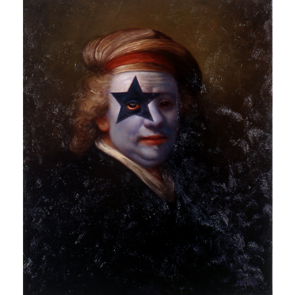

Exhibitions
Ron English, FIFTY24SF Gallery (Upper Playground), San Francisco, California, US, May 2, 2003. Solo exhibition presented with Upper Playground.
Literature
Ron English, Abject Expressionism: The Art of Ron English (San Francisco: Last Gasp, 2002), p.189. ISBN 978-0867196894.
Notes
This work references Rembrandt van Rijn’s Self-portrait.